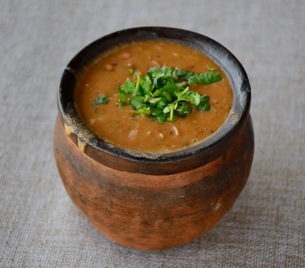

Lobio

Description
This traditional Georgian dish is made with red beans, walnuts, garlic, and cilantro.
Ingredients
- Red beans (pre-soaked)
- Onion (chopped)
- Crushed walnuts
- Garlic
- Coriander
- Blue fenugreek
- Salt and pepper
- Fresh cilantro
- Sunflower oil
Steps
- Cook the beans.
- Grind the walnuts, garlic, coriander, blue fenugreek, salt, pepper,
and half the cilantro with a mortar and pestle.
- Fry the onions in oil.
- Drain the beans, reserving the liquid.
- Mash the beans, leaving some beans whole.
- Add the onions, walnut mixture, and some liquid to the beans.
- Add the rest of the cilantro.